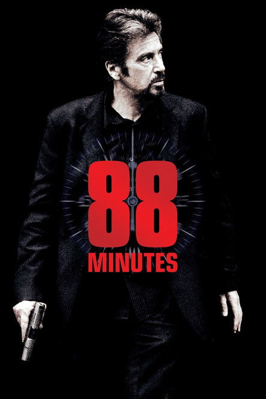

88 Minutes (2007)
الوصف: Famed forensic psychiatrist Dr. Jack Gramm enjoys a reputation as one of the most sought-after profilers around. His expert testimony has resulted in the conviction of many criminals, including serial killer Jon Forster. On the eve of Forster's execution, one of Gramm's students is murdered in a vicious copycat crime, and Gramm himself receives an ominous message informing him that he has less than 90 minutes to live.
الممثلون
- Al Pacino (Dr. Jack Gramm)
- Alicia Witt (Kim Cummings)
- Leelee Sobieski (Lauren Douglas)
- Amy Brenneman (Shelly Barnes)
- William Forsythe (FBI Special Agent Frank Parks)
- Deborah Kara Unger (Dean Carol Lynn Johnson)
- Ben McKenzie (Mike Stempt)
- Neal McDonough (Jon Forster)
- Leah Cairns (Sara Pollard)
- Stephen Moyer (Guy LaForge)
المخرج: Jon Avnet
المنتج: Randall Emmett